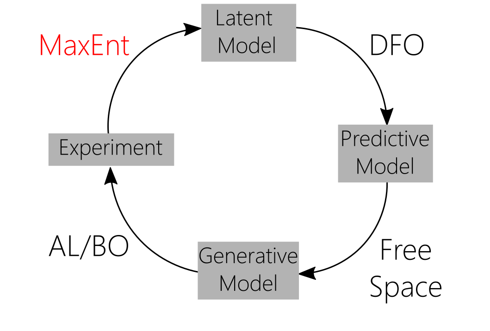
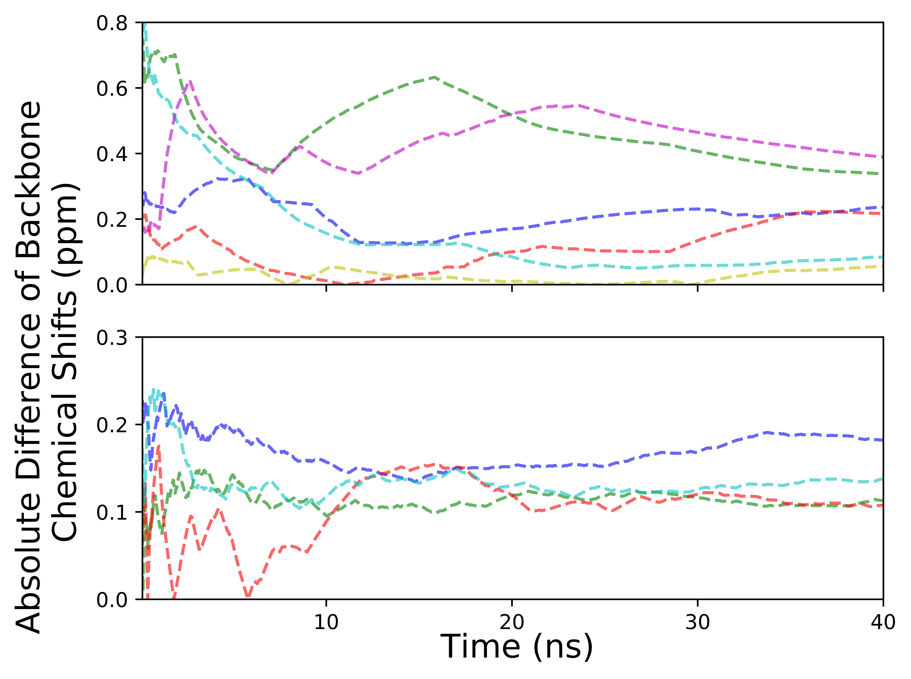
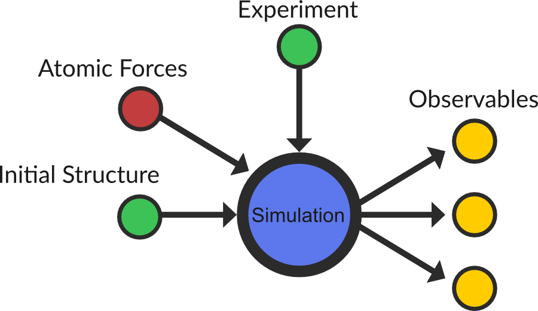
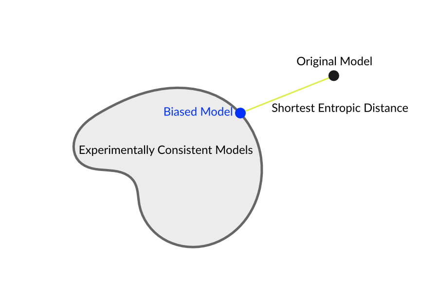
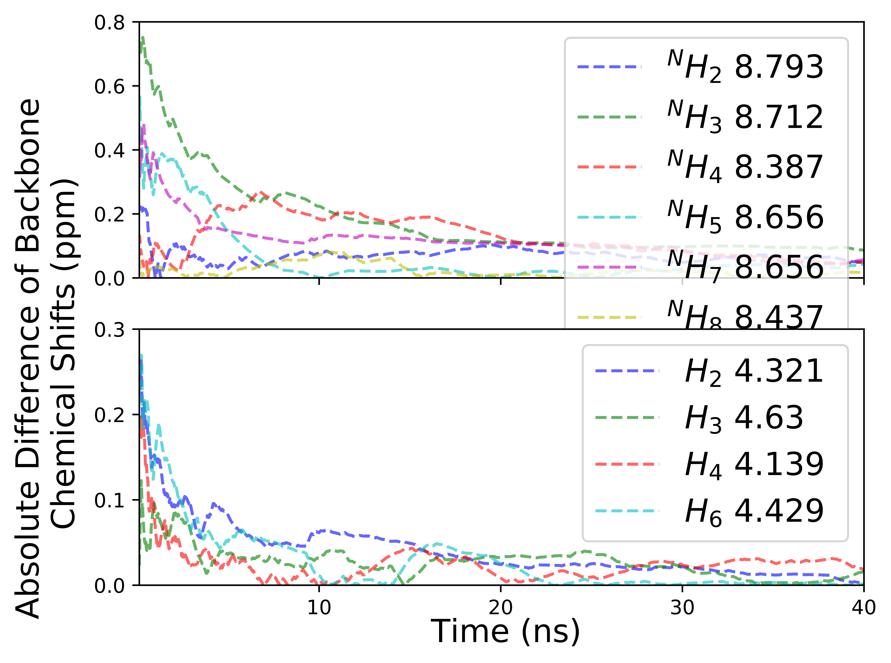
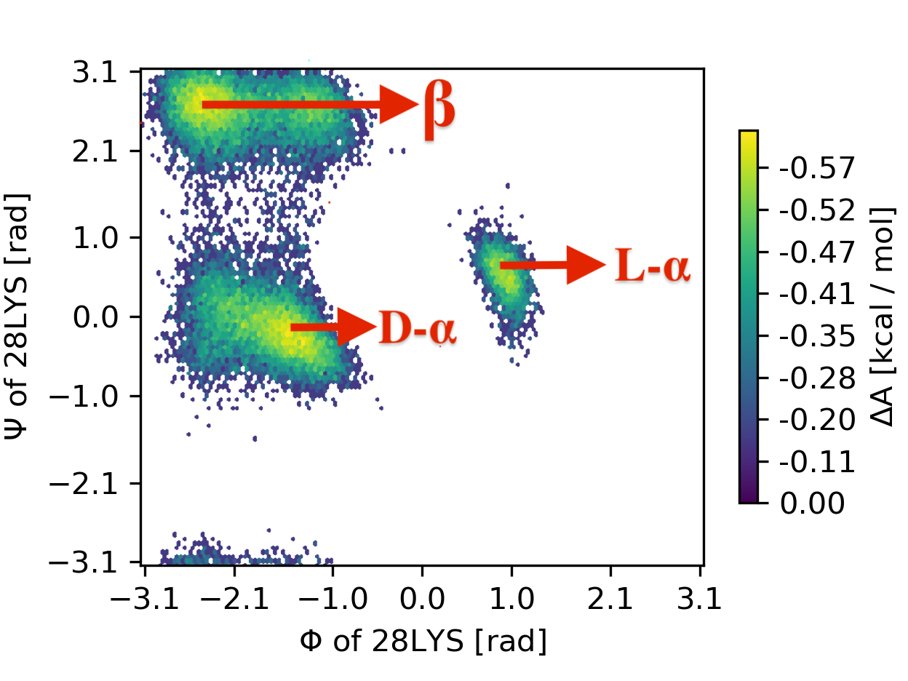
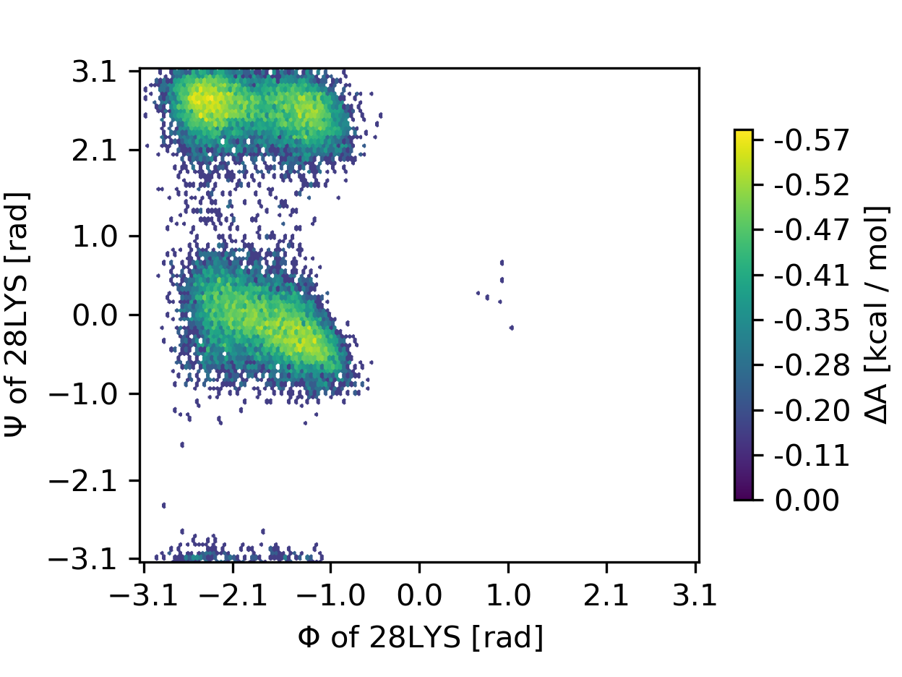
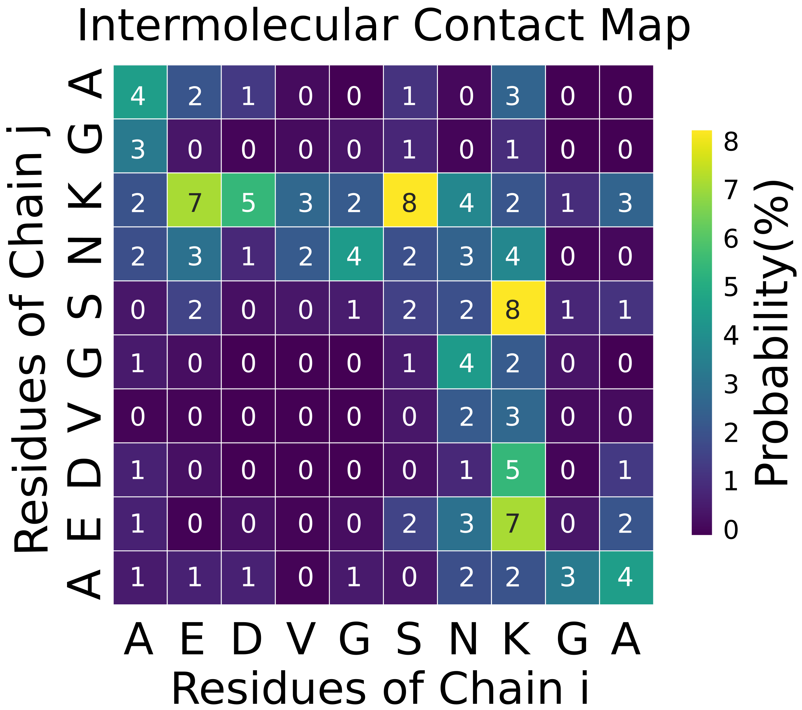

Iterative Materials Discovery with Maximum Entropy Methods and Deep Learning
Andrew White
University of Rochester
Department of Chemical Engineering
Plumed Masterclass
April 2022
Simulation goes from the interaction energy of molecules...
...to properties of ensembles of molecules
Most properties can be computed knowing the position of every atom \(f(\vec{r})\)
Probability of any state:
$$P(\vec{r}) = \frac{1}{Z} e^{-\frac{U(\vec{r})}{kT}}$$The observable ensemble average
$$ \left < f(\vec{r})\right> = \int d\vec{r}\, P(\vec{r})f(\vec{r}) $$How can we use experimental data to improve simulations?
Motivating Example
Using experimental data to create highly accurate peptide self-assembly simulations
Peptides are chains of connected monomers chosen from a set of 20 amino acids
There are about $10^{30}$ synthesizable peptides
Examples:
AARKPIVFFRGDCPPPPEKEKEKEKEY
A\(\beta\) is believed to be the toxin which causes symptoms of Alzhiemer's Disease
Accuracy, time, and length challenge
What can we study with 21-30 Fragment?
- Can simulation without external data model this system?
- What is the structure of this fragment?
- How does the fragment interact? Does it nucleate?
- Why do co-mutations affect aggregation rates?
Current methods give high inaccuracy
40 ns of 21-30 single fragment in NVT 278K MD with Gromacs Amber 99sb-ildn. H NMR chemical shift cumulative error is plotted for each backbone amino acid.
Can we improve this force-field by adding the experimental data as input?
Small Data Learning
Improve complex approximately correct model with small amount of training data
- J Pitera & J Chodera J Chem Theory Comput 2012 8:3445
- B Roux & J Weare J Chem Phys 2013 138:084107
- AD White & GA Voth J Chem Theory Comput 2014 10:3023
Maximum Entropy
- \( P_0(\vec{r}) \) Unbiased Model
- \( f(\vec{r}) \) Observable property
- \( \left < f(\vec{r})\right> = \int d\vec{r}\, P'(\vec{r})f(\vec{r}) = \hat{f} \)
- \( \Delta S_{\textrm{rel}} = \int d\vec{r}\, P(\vec{r})\ln \frac{P(\vec{r})}{P'(\vec{r})} \)
Minimize \( \Delta S_{\textrm{rel}}\) while satisfying \( \left < f(\vec{r})\right> = \hat{f} \)
- J Pitera & J Chodera J Chem Theory Comput 2012 8:3445
- B Roux & J Weare J Chem Phys 2013 138:084107
- AD White & GA Voth J Chem Theory Comput 2014 10:3023
The Minimal Ensemble is
$$P'(\vec{r}) = P_0(\vec{r})e^{-\alpha f(x)}$$The Minimal Bias Added to Potential Energy is
$$U'(x) = U(x) + \alpha f(x)$$To Make
$$<f(x)> = \hat{f}$$A linear bias is minimal and unique*
Mathematically unique. As of 2017 there are 28 competing minimal biasing methods in molecular modeling (Bonomi, et al. 2017 Curr. Op. Struct. Bio.)
Minimal Bias Example
Finding $\alpha$
$$ \frac{\partial \left< f(\vec{r}) - \hat{f} \right>^2}{\partial \alpha} = 2\beta\left< f(\vec{r}) - \hat{f} \right> \left(\left< f^2(\vec{r})\right> - \left< f(\vec{r})\right>^2\right) $$We used a FTRL variant, but any optimization method works.
White AD & Voth GA. J Chem Theory Comput 2014 10:3023
We must use experimental data to model this fragment accurately
EDS Simulation
Normal Simulation
A\(\beta_{21-30}\) 96.2% purity at 0.5mM in 90% H\(_2\)O/D\(_2\)O at pH 6.05. 278 K (to avoid cross-relaxation) measured \(^1\)H chem shifts. Peaks assigned via TOCSY
Improving NMR shifts changes structure
EDS Simulation
Normal Simulation
Enhanced-Sampling (PT-WTE) was used with 16 replicas
Four Fragments
How do the peptides interact?
With EDS

PT-WTE
Diffusivity of EDS simulation matches NMR Experiment
| System | Peptide Diffusivity [$\times 10^{-6}$ cm2 / s] |
$p$-value |
|---|---|---|
| PGSE Exp | 1.8 | -- |
| No EDS | 0.58$\pm$ 0.56 | 2$\times 10^{-5}$ |
| EDS | 1.7$\pm$0.7 | 0.78 |
Conclusions
- EDS improves agreement with experiment
- Peptides are more aggregation prone when correcting chemical shifts with EDS
- Even using one peptide, with EDS we can see structure similar to what is seen in aggregating simulations
Amirkulova DB, Chakraborty M, White AD (2020) J Phys Chem B
Experiment Directed Simulation (EDS)
A maximum entropy (MaxEnt) method which improves a simulation by biasing averages to match experimental data via maximum entropy. Can match multiple scalars or probability distributions in arbitrary dimensions.
$$ U'(\vec{r}) = U(\vec{r}) + \sum_i \lambda_i s_i(\vec{r}) + \sum_j \mu_j\left[v(\vec{r})\right] $$Experiment Directed Simulation
| Review Paper: | Amirkulova D & White AD Molecular Simulation 2019 45 (14-15): 1285-1294 |
| Implementation: | github.com/plumed/plumed2, github.com/ur-whitelab/hoomd-tf |
| Sim Engines: | Gromacs, NAMD, CP2K, DL_Poly, Lammps, Hoomd-blue |
Extensions of EDS
- Uncertainty in experimental data (arbitrary distributions)$^{24}$
- Improving coarse-grained models with experimental data$^{32}$
- Biasing in the NPT ensemble
- As mean field in coarse-graining$^{21}$
- Enhanced sampling$^{38}$
- Working with probabilities, instead of expectations$^7$
- Improving structure of DFT water in AIMD$^{10}$
Citations are from Amirkulova D & White AD Molecular Simulation 2019 45 (14-15): 1285-1294